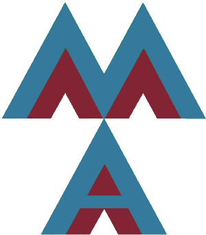

Meravigliosi automi - A quick guide
"That strange glyph in the main page doesn't seem an automaton"
If this is what you think, you're in the rigth place.
According with that crazy geeks that IS an automaton (and according to the authors a WONDERFUL one),
more specifically that is called a finite state automaton or finite state machine (less fancy, so we'll go for
the first).
Here is the technical definition...
A finite state automaton is a chimera whose parts are:
- a set of states;
- a starting state;
- a set of final states;
- an alphabet;
- a transiction function;
- probably a bit of students' frustation.
"I didn't understand the technical definition"
That's what techical definitions are for. Let's try with something more operational.
When using an automaton you will have a string
(a sequence of characters, like a word though it doesn't have to appear in any dictionary).
Let's say our string is "abc".
Now close you're eyes (okay, not literally) and imagine you're working on paper,
that's what students did in ancient times when this WONDERFUL site wasn't invented yet.
So you put your finger on one of the circles you had drawn, your starting state,
and you consider the first character of your string "a".
If there is an arrow that lead from the state with your finger to another circle
and that arrow is labelled with "a" *, you move the finger to the other circle.
Now you can repeat with "b", and so on.
The target is that after the last letter ("c" in this example) your finger should be pointing one of the final
states.
*) Things can be just a little different...
1) Actually the label could be something more complicated like:
- "a,c": you can cross the arrow with letter "a" or "c";
- "not c,not d": you can cross the arrow with any character of the alphabet that is not "c" and not "d";
- "*": you can cross the arrow with any character of the alphabet.
2) It can also happen that more then one outgoing arrow are labelled with a rule matching with
the current character. Congratulations, you've found a non deterministic automaton,
it means that from some states with the same character you reach more then one states.
Good luck with the finger twist (or you can use this WONDERFUL site).
3) If there are not arrows crossable with the current character you lost,
the string is rejected by the automaton.
You also lose if you run out of characters while being in a not final state.
For the sake of completeness the "transiction function" in the technical definition is
actually a collection of transictions represented by the arrows, more often called edges or archs.
It's a complex word for a simple concept, it just tell you
"if you are in state x and have letter y you move in state z".
"What's all this sufference for?"
It's a model, to mitigate greater pains.
"Just tell me how to use the site"
- You can add states with icon
add_circle ,
and while selecting two states you can add an edge with icon commit .
- You can also discard a selected element with icon delete_forever .
- By selecting a state you can set its label and set it as final.
- By selecting an edge you can set the rule to cross it (use comma separated characters).
In the option panel settings you can:
- select the starting node;
- set the alphabet (a set of comma separated characters);
- choose if you want to check that the automaton is deterministic (it will be performed during evaluation, see
further);
- choose if you want to see a little animation during evaluation (see further);
- load your wonderful automaton in the hub save ;
- share your automaton with your fellow frustrated friends share ;
- save a thumbnail of your automaton image ;
- generate a random matching string (cool isn't it?) sort_by_alpha ;
- clear the worksheet (how you dare, that automon was wonderful!) clear .
- Last but not least, you can write a string in the footbar and click on
skip_next to evaluate it with your atomaton.
In the sidemenu you will find a link to the source code
and to the hub where you can share your creations with the community.
Now go, start creating wonderful automata!
Credits
Do you really care? Awww thanks : )
Matteo Migliarini
Matteo Miletta
Flavia Ricci
A group of students from La Sapienza University of Rome.
A special thanks to dash14 for his REALLY WONDERFUL library v-network-graph.
No seriously, also fixed a bug for us. Here you find the
repository.